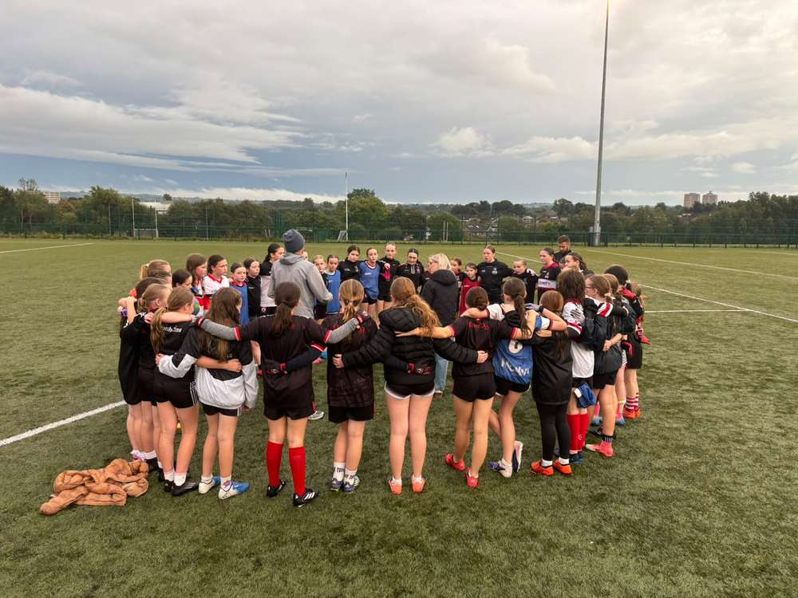
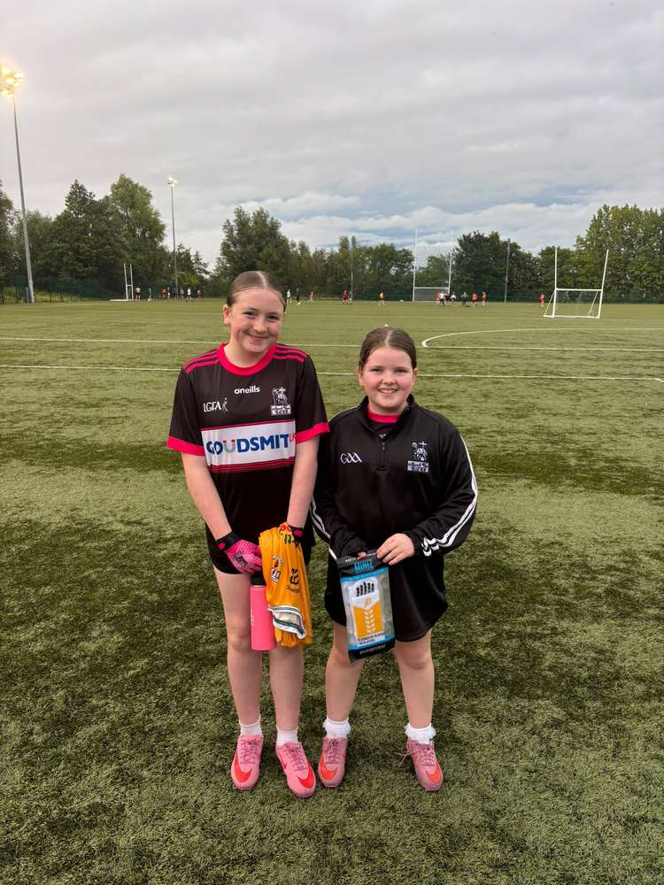
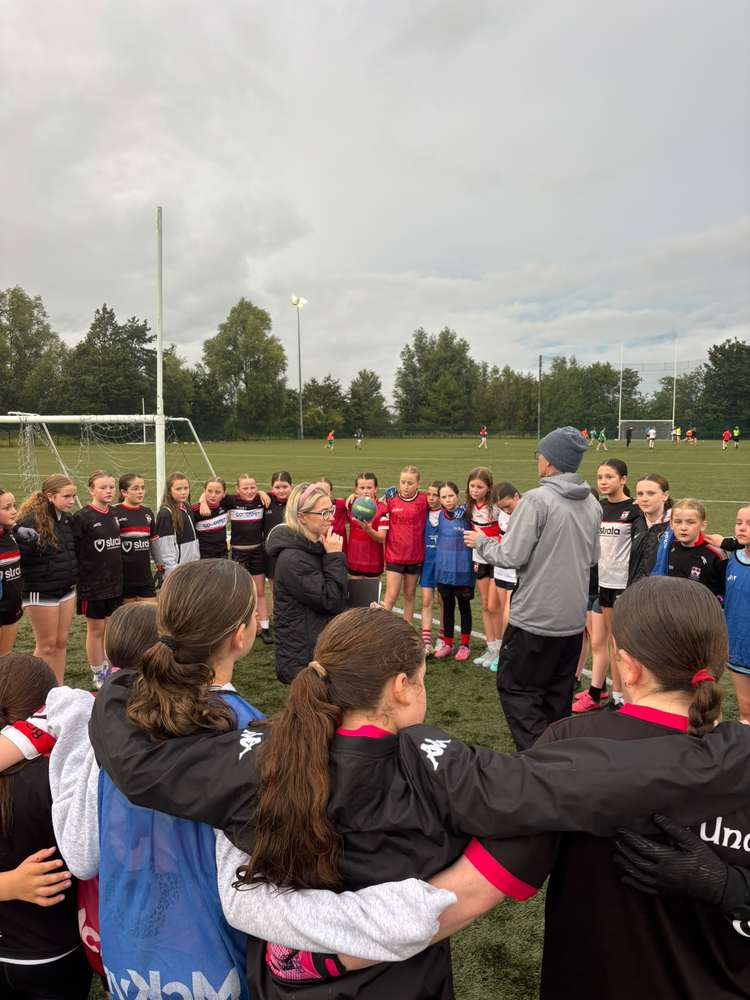
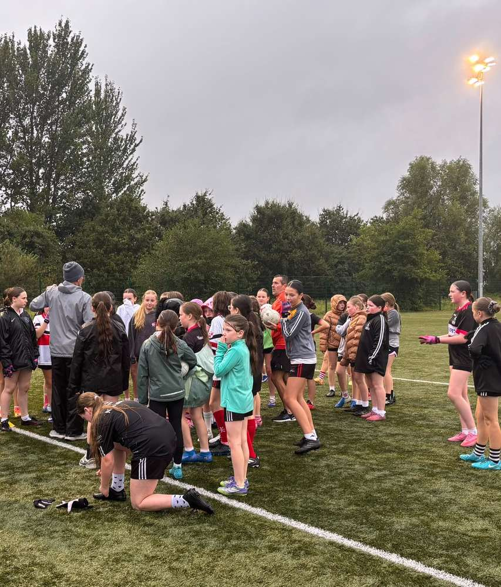
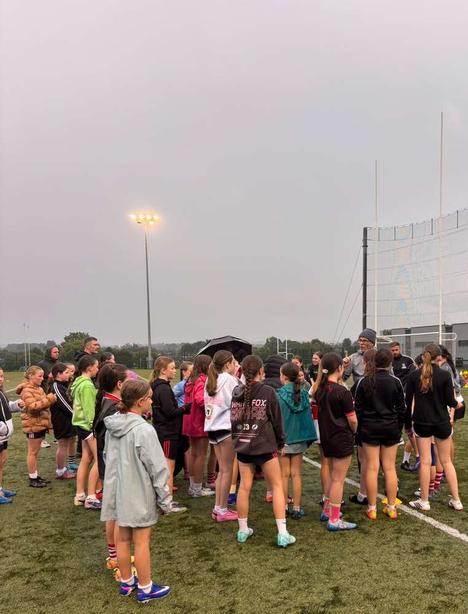
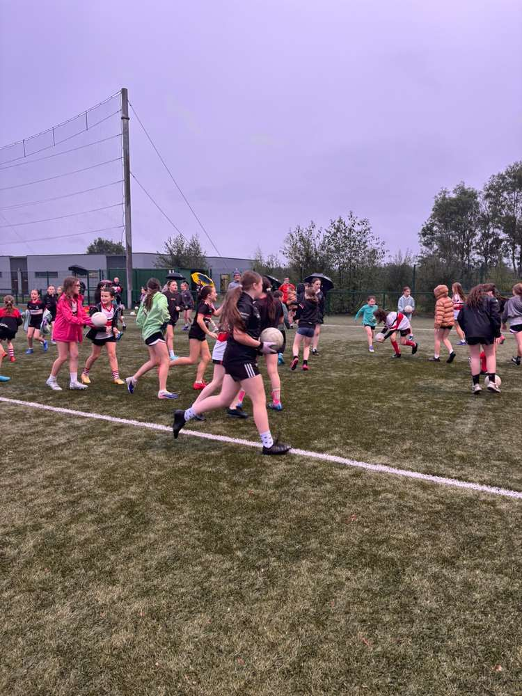
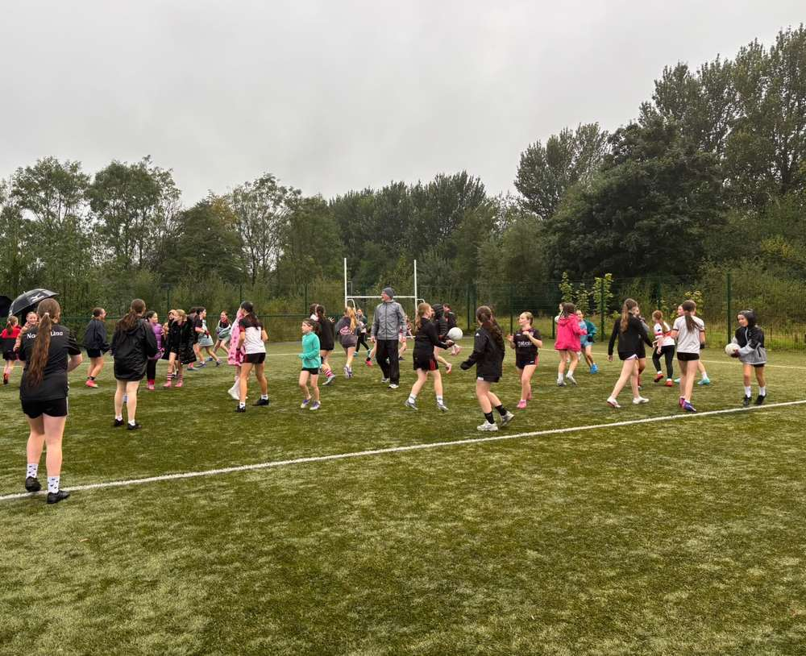
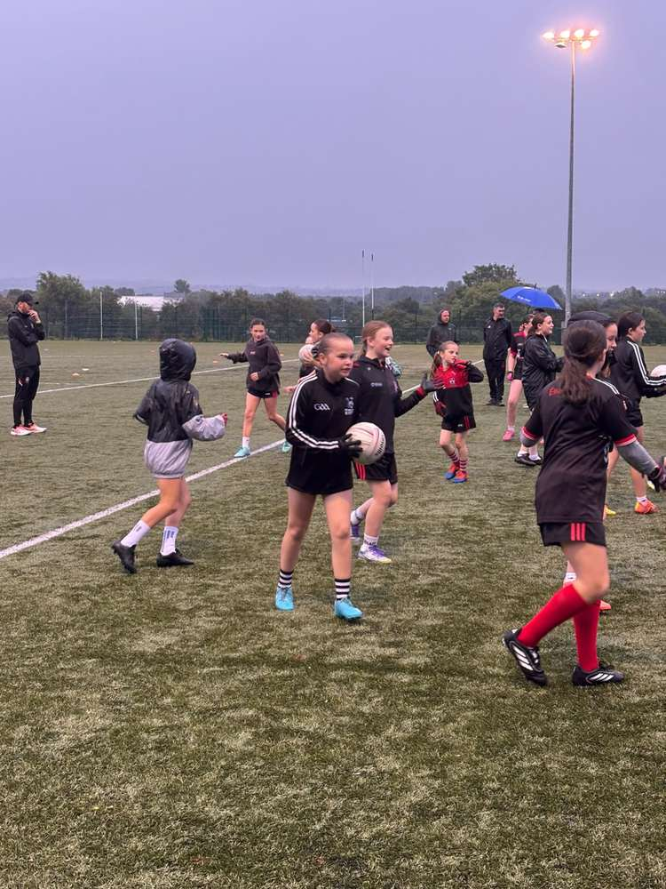

Tuesday 15 September 2026
A real buzz for the future of ladies’ football
Our U10 and U12 girls from St Agnes and Éire Óg took part in a fantastic training session led by Antrim Ladies manager Mickey Devlin.
The girls were a credit to both clubs, showing some brilliant skills while learning new techniques throughout the evening. With 13 young Aggies in attendance, the session created a real buzz for the future of ladies’ football within St Agnes. 🖤🤍💗
A special shout-out goes to Daisy and Eva, who received Antrim gear in recognition of their performances. Well done, girls! 🏐💪
Thank you to Mickey for giving the girls such an enjoyable and inspiring experience.






